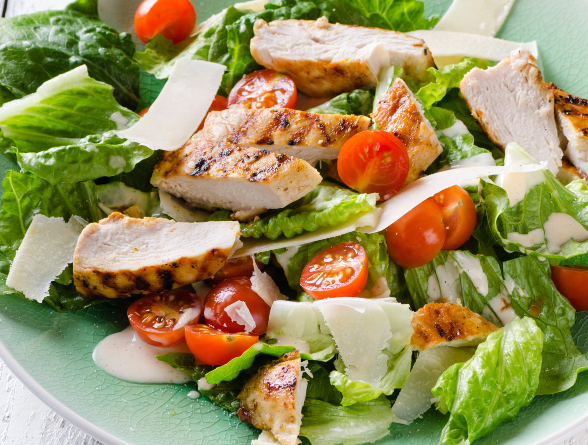

Grilled Chicken with Salad

Hot Chicken Chopped salad
Avocado Chicken Salad
Green Goddness Salad

Chicken with Salad
Your resource for small and easy meals
Chicken salad is any salad with chicken as a main ingredient. salad is a variety of cold dishes that include small pieces of food (such as pasta, meat, fruit, or vegetables) mixed with a dressing or mayonnaise. To put it simply, if it's dressed you can feel confident calling it a salad! In Canada and the United States, "chicken salad" refers to either any salad with chicken, or a specific mixed salad consisting primarily of chopped chicken meat and a binder, such as mayonnaise, salad dressing or cream cheese. Like tuna salad and egg salad, it may be served on top of lettuce, tomato, avocado, or some combination of these. It may also be used for sandwiches. Typically it is made with leftover cooked or canned chicken. It may also refer to a garden salad with fried, grilled, or roasted chicken (usually cut up or diced) on top. In Europe and Asia the salad may be complemented by any number of dressings, or no dressing at all, and the salad constituents can vary from traditional leaves and vegetables, to pastas, couscous, noodles or rice.
| Ingredient | Measurement |
|---|---|
| chicken breasts | 500 gm |
| parmesan cheese | 1 cup |
| washed & dried lettuce romaine | 250 gm |
| canola oil/ rapeseed oil | 2 teaspoon |
| croutons | 1 1/2 cup |
| caesar salad dressing | 1 cup |
| freshly ground black pepper | as required |
| chopped red onion | 1/2 cup |
| chopped cucumber | 2/3 cup |
| cups romaine lettuce, chopped | 2/3 cup |
| All varieties of fish and seafood | as reqired |
Grilled Chicken with Salad
Hot Chicken Chopped salad
Avocado Chicken Salad
Green Goddness Salad
Chicken with Salad